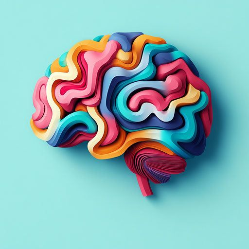

At Better Minds Psychology Center, we believe healing extends beyond traditional talk therapy. We empower individuals to cultivate self-discovery and emotional growth through the transformative power of art and dance therapy. Whether you are navigating stress, trauma, or a desire for personal development, our licensed clinicians provide a safe, non-judgmental space to explore your inner world. You don’t need artistic experience to begin; you only need a willingness to explore. Together, we utilize movement and creative expression to release tension, process complex emotions, and build a more resilient, balanced, and healthier mind.
Ready to express, process, and grow? Contact us today to schedule your initial consultation.